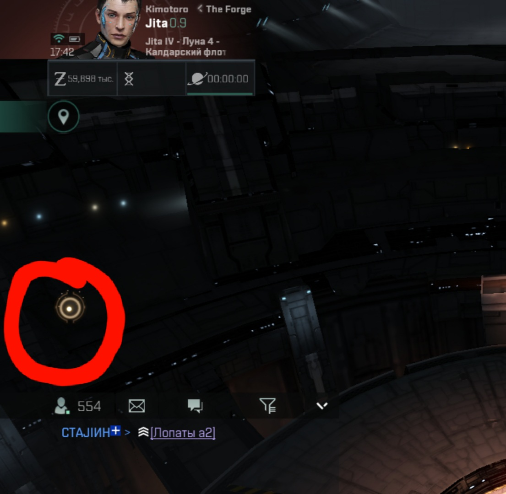

Привет, если ты зашёл сюда, то ты явно хочешь быстро прокачаться в еве и я расскажу как это делал я и с чем столкнулся.
Возможно вы матёрый пилот EVE online, но в echoes вам тоже придётся пройти обучение из-за достаточно больших бонусов для старта. Если вы как-то отказались от обучения, то к нему всегда можно будет вернуться. В нижнем левом углу будет чат, а над ним будет нечто похожее на жёлтый глаз-по лору это ваш корабельный компьютер с искусственным интелектом,
нажимаем на этот 'глаз'и нам выскакивает 'Руководство для рекрутов' в котором увидем 'Учебные курсы'.

Вы нажимаете на них и вылезет кампания обучения в которой выполненые задания отображаются зелёной галочкой, а недоступные подсвечены серым. Нам нужна миссия, которая подсвечена жёлтым, нажмите на неё и увас вылезет ещё одно меню, которое вам даже не обязательно читать, так как вам всего лишь нужно нажать кнопку 'Принять' для принятия задания заново.
.jpg)
Далее вы должны внимательно читать диалоги персонажей для того чтобы понять чего они от вас хотят. Обычно в обучении есть подсказки о том куда нажимать, чтобы его пройти, но если их нет, то вы вспомните, что от вас хотели и быстро всё найдёте. После завершения обучения у вас будет эсминец Т4 и учебная Вентура. Про вентуру вы можете забыть так как с ней много ISK не заработать, и вам придётся принять тот факт, что копка для новичков убита, а в идти в PVP вы не готовы из-за отсутствия хорошего корабля и скилов. Значит остаётся фарм ботов.